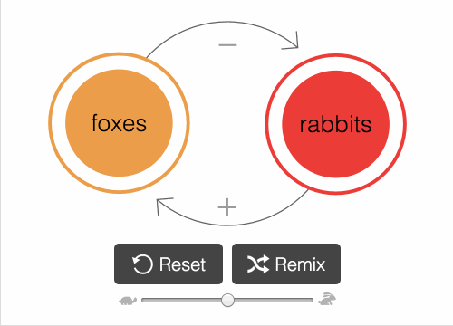

In a world filled with ever-more-complex
technological, sociological, ecological,
political & economic systems...
a tool to make interactive simulations may not be that much help.
But it can certainly try.

play with simulations
It's the ancient, time-honored way of learning:
messing around and seeing what happens.
Play with simulations to ask "what if" questions, and get
an intuition for how the system works!
programming by drawing
Raw code is too inaccessible.
Also drag-and-drop is too mainstream.
But with LOOPY, you can model systems by simply drawing circles & arrows,
like a wee baby


remix others' simulations
Want to build upon your friends' models?
Or challenge your enemies' models?
LOOPY lets you have a conversation with simulations!
You can go from thinking in systems,
to talking in systems.